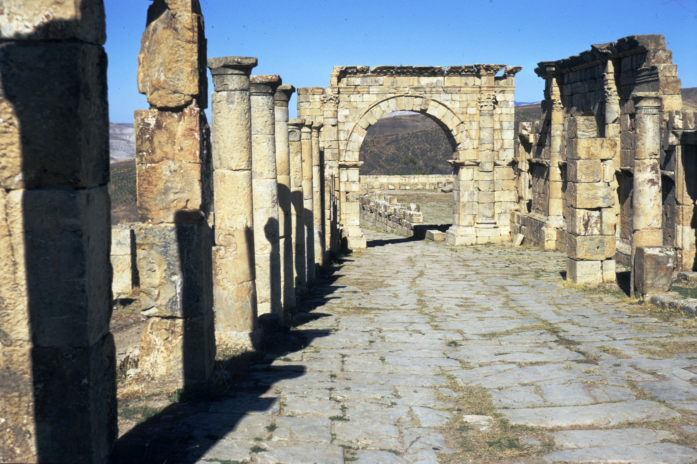
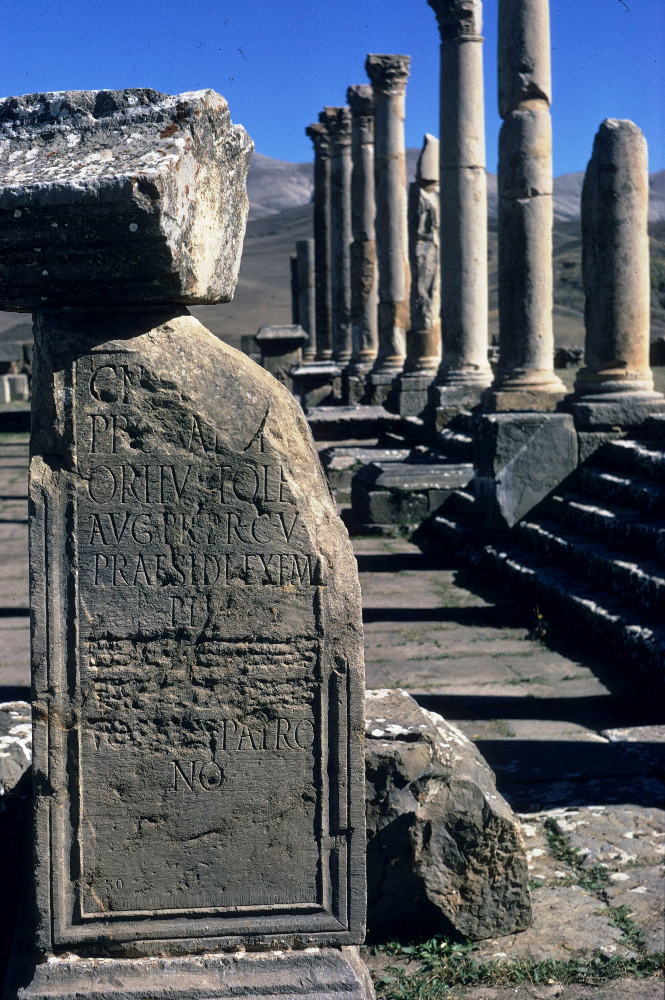
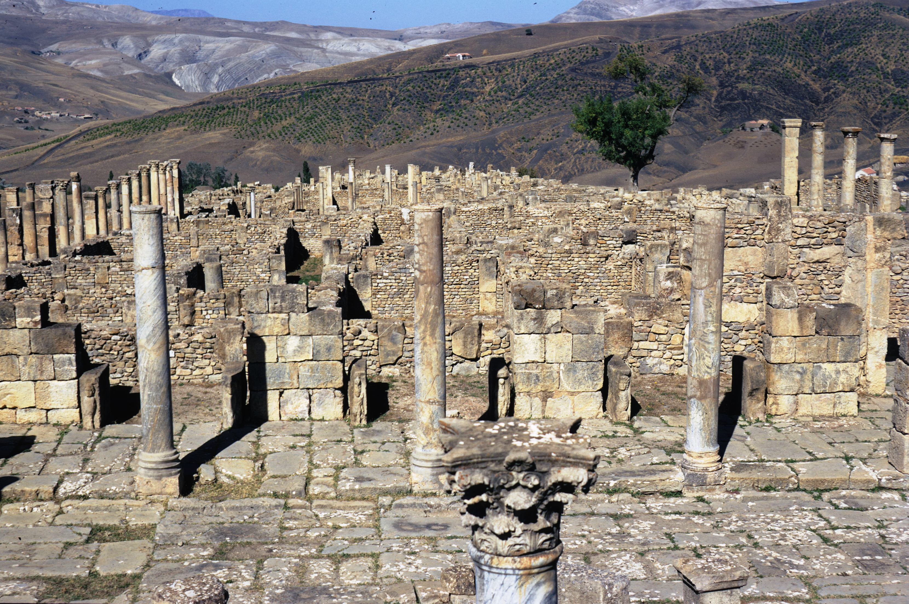
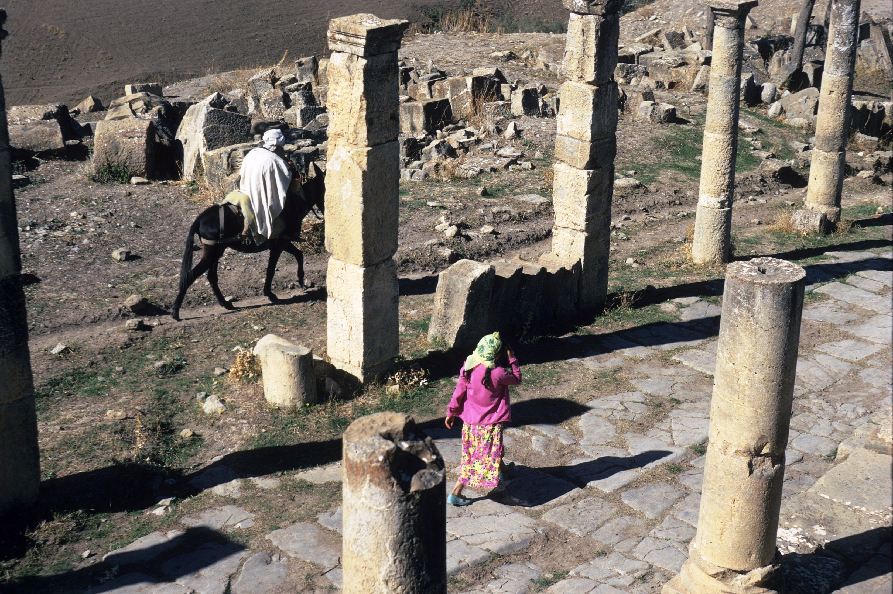
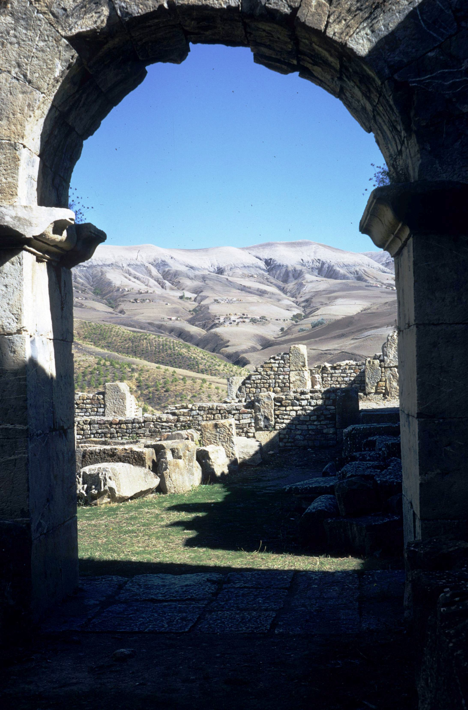
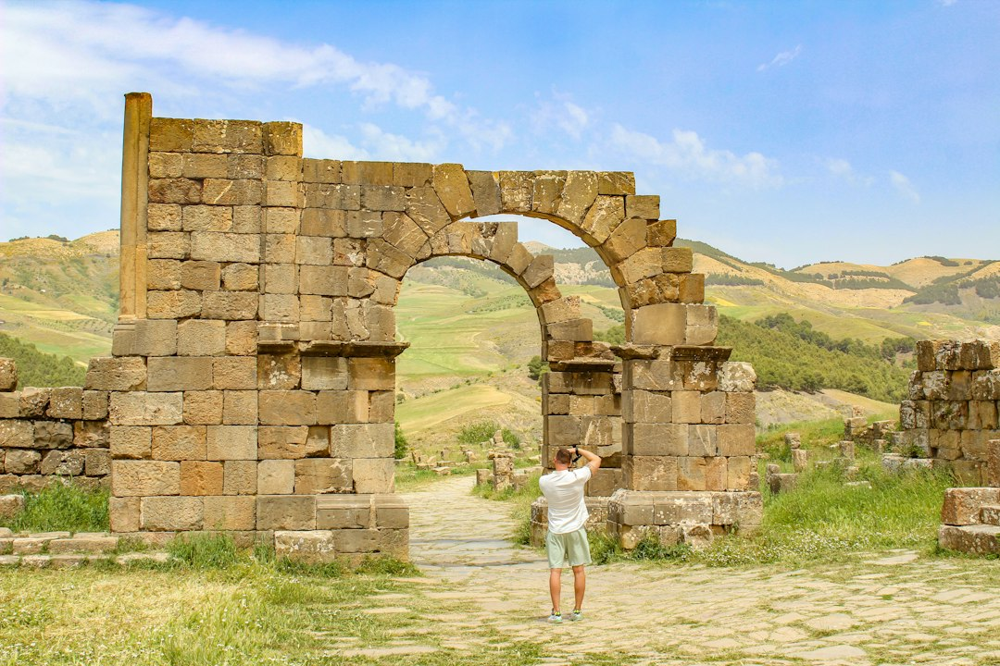
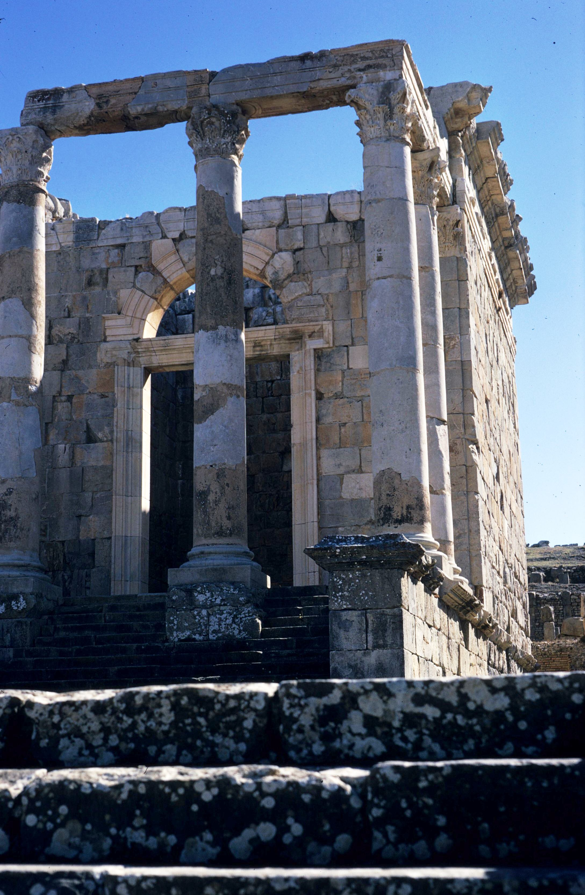

Beauty in a Name
The Arabs, when they encountered the
ruins of this Roman city among the mountains of northeastern Algeria, gave it a
name that required no elaboration. They called it Djémila — "the
beautiful." It was a simple judgement, but an accurate one. For even in
ruin, even after seventeen centuries of abandonment and decay, the city that
the Romans knew as Cuicul retains a capacity to astonish that few
archaeological sites in the Mediterranean world can equal.

Djémila lies at an altitude of
approximately 900 metres, upon a narrow triangular promontory bounded on two
sides by deep ravines. The surrounding landscape is mountainous and semi-arid —
a terrain of scrubby vegetation, rocky outcrops, and vast skies. It is not, at
first glance, a landscape that one would associate with the refinements of
Roman urbanism. There are no navigable rivers, no fertile coastal plains, no
obvious strategic advantages. And yet the Romans chose this site, built upon it
a city of remarkable ambition, and maintained it for the better part of four
centuries.

The reasons for this choice were rooted in the particular circumstances of Roman North Africa. Cuicul was founded in the first century A.D. as a military colony — a settlement of veteran soldiers established to secure Roman control over the recently conquered territory of Numidia. The elevated, defensible position of the site served this military purpose admirably. But the city that grew from this martial origin would eventually transcend it, becoming a thriving civil community whose monuments rival those of the most celebrated Roman cities of the Mediterranean.

The Foundation and Growth of
Cuicul
Cuicul was established during the
reign of the emperor Nerva, in approximately 96-97 A.D. The first settlers were
veterans of Roman legions — soldiers who, upon completing their twenty-five
years of service, were granted plots of land in the new colony as both reward
and inducement. These men, accustomed to the order and discipline of the
legionary camp, imposed upon their new settlement a plan of corresponding
regularity.

The original city occupied the
northern portion of the promontory. Its layout followed the standard Roman
colonial template: a grid of streets intersecting at right angles, organized
around two principal axes — the cardo maximus running roughly north-south and
the decumanus maximus running east-west. At their intersection stood the forum
— the civic, commercial, and religious heart of the city.

This original nucleus was compact.
The constraints of the terrain — the promontory narrows toward the north —
limited the possibilities for expansion in that direction. Growth, when it
came, occurred to the south, where the promontory broadens. Over the course of
the second and third centuries, a substantial new quarter was added to the
south of the original city, complete with its own forum, temples, markets, and
public buildings. The result was a city of two distinct but connected halves —
a spatial arrangement that gives Djémila its characteristic elongated form and
that makes the evolution of the city's growth unusually legible to the modern
visitor.
The Old Forum — Heart of the
Colony
The original forum of Cuicul is a
space of modest dimensions but considerable dignity. Enclosed on three sides by
porticoes — covered walkways supported by rows of columns — it served as the
central gathering place of the community. Here, citizens conducted business,
debated public affairs, honoured their gods, and commemorated their
benefactors.
The buildings surrounding the forum
include:
The Capitolium — The
principal temple of the city, dedicated to the Capitoline Triad of Jupiter,
Juno, and Minerva. The temple stands upon a raised podium at the northern end
of the forum and is approached by a broad flight of steps. Its columns, though
truncated, still define the outline of the portico that once fronted the cella
— the inner chamber that housed the cult statues.
The Curia — The meeting
hall of the city's governing council (the ordo decurionum). This was the seat
of municipal government — the place where the leading citizens of Cuicul
gathered to pass resolutions, allocate funds, and administer the affairs of the
colony.
The Civil Basilica — A
large, aisled hall that served as both a courthouse and a covered market. The
basilica was, in the Roman world, the standard venue for legal proceedings and
commercial transactions, and its presence at Cuicul attests to the city's
functioning judicial and economic life.
Inscriptions found throughout the forum record the names of magistrates, priests, and civic benefactors — individuals who paid for the construction or restoration of public buildings, the organization of games, or the provision of public feasts. These inscriptions, mundane though they may appear, are invaluable historical documents. They reveal the social structure of the community, its patterns of patronage and civic competition, and its connections to the wider Roman world.
The second and third centuries A.D.
were a period of extraordinary prosperity for Roman North Africa. The region's
agricultural wealth — particularly its production of grain, olive oil, and wine
— generated revenues that funded an ambitious programme of urban construction
across the province. Cuicul, though smaller than the great coastal cities of
Timgad, Leptis Magna, and Carthage, participated fully in this building boom.

The southern quarter of the city,
developed during this period, represents a significant expansion of the urban
area and includes several monuments of exceptional importance.
The centrepiece of the southern
quarter is a second forum, larger and more elaborate than the original. This
forum was constructed during the reign of the Severan dynasty — the family of
North African origin that ruled the Roman Empire from 193 to 235 A.D. The
Severan Forum at Djémila is surrounded by an elegant colonnade and dominated by
a large temple, possibly dedicated to the Severan imperial family.

The construction of a second forum
within a single city is relatively unusual in the Roman world and speaks to the
growth and ambition of Cuicul during the high imperial period. It also reflects
the political significance of the Severan dynasty in North Africa — a dynasty
that, as natives of the region (Septimius Severus was born in Leptis Magna, in
modern Libya), held particular resonance for the cities of the African
provinces.
The Arch of Caracalla
Standing at the junction between the
old and new quarters of the city is the Arch of Caracalla — a triumphal arch
erected in 216 A.D. in honour of the emperor Caracalla and his mother, Julia
Domna. The arch is one of the best-preserved Roman triumphal arches in North
Africa. It spans the principal street of the city and would have served as a
monumental gateway marking the transition from the original colony to the newer
southern quarter.
The arch is of a single fornix (opening), flanked by engaged columns of the Corinthian order. An inscription across the attic records the dedication to Caracalla and his mother. The arch has been partially restored but retains the greater part of its original masonry.
The Theatre and Public Life
On the eastern slope of the
promontory, overlooking one of the ravines that bound the site, stands the
theatre of Cuicul. Built in the second century A.D., it could accommodate
approximately 3,000 spectators — a figure that gives some indication of the city's
population during the imperial period.
The theatre is built into the
natural slope of the hillside, its semicircular cavea (seating area) taking
advantage of the terrain to minimize the need for artificial substructures. The
orchestra — the semicircular space between the seating and the stage — retains
its original paving. The scaenae frons (stage building) has largely collapsed,
but its foundations and several fallen architectural elements allow its
original form to be reconstructed.
The theatre was not merely a venue
for entertainment. In the Roman world, theatrical performances were intimately
connected with religious festivals, civic celebrations, and political display.
The games (ludi) were organized and funded by wealthy citizens as acts of
public benefaction, and the theatre was, accordingly, a stage not only for
actors but for the social and political life of the community.
Adjacent to the theatre, excavations have revealed the remains of what appear to be public latrines — a characteristic feature of Roman urban life that modern visitors tend to regard with a mixture of amusement and admiration. The latrines at Djémila were communal, equipped with running water, and decorated with architectural embellishments. They remind us that Roman urbanism was, at its best, a comprehensive system — one that attended to the practical necessities of daily life with the same care and investment that it devoted to temples and forums.
The Baptistery and the Coming
of Christianity
The history of Cuicul did not end
with the decline of paganism. The fourth and fifth centuries witnessed the
transformation of the city from a centre of Roman polytheism to a community of
Christian worship — a transformation that left its mark upon the urban
landscape in dramatic fashion.
The most significant Christian
monument at Djémila is the baptistery, which stands within a larger
ecclesiastical complex in the southern quarter of the city. The baptistery is
remarkable for both its architectural form and its mosaic decoration.
The building is square in external
plan but circular internally, with the baptismal font — a deep, cross-shaped
basin designed for full-immersion baptism — at its centre. The floor
surrounding the font is covered with mosaics of exceptional quality and complexity.
The decorative programme includes geometric patterns, floral motifs, and images
of animals and birds, rendered in a palette of vivid colours that have survived
with remarkable freshness.
The baptistery at Djémila is among
the finest early Christian monuments in North Africa and stands comparison with
the celebrated baptisteries of Italy and the eastern Mediterranean. Its
presence here, in a small provincial city in the mountains of Numidia, is a
reminder that the spread of Christianity in the Roman world was not confined to
the great metropolitan centres but penetrated deeply into the fabric of
provincial urban life.
Adjacent to the baptistery stands a basilica — a large, aisled church that served as the principal place of worship for the Christian community. The basilica follows the standard early Christian plan: a rectangular nave flanked by side aisles, with an apse at the eastern end. Fragments of carved stone — column capitals, altar screens, decorative panels — recovered from the basilica attest to the quality of its interior furnishings.
The Mosaics — A Gallery in
Stone
If the architecture of Djémila
impresses by its scale and preservation, the mosaics of the site astonish by
their beauty and variety. Cuicul has yielded one of the richest collections of
Roman mosaic art in North Africa — a region that was, during the imperial
period, one of the great centres of mosaic production in the ancient world.
The mosaics of Djémila range in date
from the second to the fifth century A.D. and encompass the full spectrum of
Roman mosaic art — from simple geometric patterns to elaborate figured scenes
of mythological, pastoral, and marine subjects.
Among the most celebrated examples
are:
The Mosaic of Venus at Her Toilet —
A large floor mosaic depicting the goddess Venus at her bath, surrounded by
attendant figures and marine creatures. The composition is elegant, the drawing
accomplished, and the colour harmonies refined.
The Mosaic of the Seasons —
A mosaic depicting personifications of the four seasons, each represented as a
female figure bearing appropriate attributes — flowers for spring, grain for
summer, grapes for autumn, bare branches for winter.
The Mosaic of the Donkey and the
Ass-Driver — A more comic subject, depicting a scene from daily life
with characteristic Roman directness and humour.
The Hunting Mosaics —
Several large mosaics depicting hunting scenes — horsemen pursuing wild animals
across stylized landscapes — that reflect the aristocratic culture of the late
Roman provincial elite.
Many of the finest mosaics from Djémila are now housed in the site museum — a modern building constructed adjacent to the ruins for the purpose of protecting and displaying these fragile works. Others remain in situ, covered by protective shelters.
The Houses — Private Life
in a Provincial City
The domestic architecture of Djémila
provides an unusually detailed picture of private life in a Roman provincial
city. Several large houses — the residences of the city's wealthier inhabitants
— have been excavated and reveal plans of considerable complexity and comfort.
The typical elite house at Cuicul
follows the general Mediterranean model: rooms arranged around a central
courtyard or peristyle, with the principal reception rooms opening onto the
courtyard through wide doorways. The courtyards were often embellished with
fountains, gardens, and mosaic pavements. The rooms were decorated with painted
plaster on the walls and mosaics on the floors.
Two houses in particular deserve
mention:
The House of Europa —
Named for a mosaic depicting the abduction of Europa by Zeus in the form of a
bull. The house is large and well-appointed, with multiple reception rooms and
a spacious peristyle courtyard.
The House of Bacchus —
Named for a mosaic depicting Bacchus (Dionysus), the god of wine. This house
preserves a particularly elaborate suite of reception rooms, suggesting a
household of considerable social pretension.
These houses remind us that Roman civilization was not merely a matter of public monuments and imperial policy. It was also, and perhaps primarily, a domestic civilization — a civilization of private comfort, aesthetic refinement, and social display centred upon the house and the household.
|
Threat |
Severity |
Details |
|
Weathering and erosion |
🟡 Moderate |
Mountain climate with significant
temperature variation |
|
Structural instability |
🟡 Moderate |
Some walls and columns at risk of
collapse |
|
Mosaic conservation |
🔴 High |
In situ mosaics vulnerable to
weather and visitor damage |
|
Vegetation encroachment |
🟡 Moderate |
Plant growth affecting structural
stability |
|
Limited visitor infrastructure |
🟡 Moderate |
Site needs improved facilities and
interpretation |
|
Insufficient funding |
🔴 High |
Conservation needs exceed
available resources |
X. Reflection — The Roman
Achievement in Africa
Djémila stands as a reminder of a
truth that the European historical tradition has been slow to acknowledge: that
Roman civilization in North Africa was not a colonial imposition upon a passive
and undeveloped landscape, but a creative synthesis — a blending of Roman
institutional forms with the energies and resources of indigenous African
societies that produced an urban culture of genuine vitality and distinction.
The citizens of Cuicul were not
Romans transplanted to an alien soil. They were, for the most part, Romanized
Africans — men and women of Berber, Punic, and mixed ancestry who had adopted
the Latin language, Roman legal forms, and Roman cultural practices while
retaining elements of their indigenous traditions. The city they built reflects
this synthesis. Its plan is Roman. Its temples honour Roman gods. Its
inscriptions are in Latin. But its mosaics — exuberant, colourful, teeming with
life — have a vitality and a warmth that distinguish them from the more
restrained productions of metropolitan Rome.
Djémila is beautiful. The Arabs were
right.
Djemila — 'The Beautiful One' in
Arabic, Cuicul in its Roman name — occupies a mountain plateau in the Algerian
highlands at an altitude that seems almost audacious for a Roman city. Romans
built in river valleys and coastal plains, in the warm lowlands where trade and
agriculture flourished. Building a city at 900 metres in the mountains of what
is now Algeria was an act of imperial ambition, and the ruins that remain from
that ambition are among the finest preserved in the entire Roman world.
What strikes you most at Djemila
is how alive the ruins feel. The forum, the temples, the baths, the arch of
Caracalla, the theatre, and the Christian basilicas from the later Roman period
all survive to a height and completeness that allows you to genuinely imagine
the city as it was: a bustling provincial capital with tens of thousands of
inhabitants, its streets filled with the commerce and conversation of a world
that stretched from Britain to Babylon.
The UNESCO inscription in 1982
recognised Djemila as an outstanding example of Roman urban planning adapted to
a challenging mountain environment. For travellers to Algeria, it is arguably
the country's single most impressive ancient site — a reminder that North
Africa was not the periphery of the Roman world but one of its most productive
and culturally rich heartlands.
Q1: What was Djemila called in
Roman times?
The Roman city was called Cuicul, founded approximately in
the late 1st century CE under Emperor Nerva or Trajan as a military colony. It
grew to become a significant provincial city with an estimated population of
tens of thousands at its peak.
Q2: What can visitors see at
Djemila today?
Djemila preserves an exceptional range of Roman urban
structures including a forum, the Temple of the Septimii, Roman baths, a
theatre, the Arch of Caracalla, and a group of early Christian basilicas and
baptisteries from the later Roman period.
Q3: Why was a major Roman city
built at such a high altitude?
The site's elevation may have been chosen for strategic
reasons — control of mountain passes — as well as for the cooler climate and
reliable water sources. The Romans were adaptable urban planners who could
modify their standard city plans to suit challenging topographies.
Q4: Is Djemila difficult to
visit from Algeria's main cities?
Djemila is located approximately 50 kilometres north of
Sétif in northeastern Algeria. It is accessible by road and is a popular day
trip from Sétif. The journey from Algiers takes around three to four hours by
road.
|
Detail |
Information |
|
Nearest City |
Sétif (50 km) |
|
Access |
Road from Sétif; well-signposted |
|
Best Time |
Spring (March–May) or Autumn
(September–November) |
|
Time Needed |
3-4 hours |
|
Museum |
On-site museum with mosaics and
artifacts |
|
Facilities |
Basic — small café near entrance |
|
Currency |
Algerian Dinar (DZD) |
·
Blanchard-Lemée,
Michèle. Mosaics of Roman Africa (1996)
·
Thébert, Yvon.
"Private Life and Domestic Architecture in Roman Africa." A
History of Private Life, Vol. 1 (1987)
This encyclopedia is free for everyone. If it brought value to you, please consider supporting the research behind it.
☕ One-Time Support 🎯 Monthly SupportWhile exploring Djémila, Algeria — The Most Beautiful Roman Ruins in the World | UNESCO World Heritage, you may also enjoy reading Lahore Fort, Pakistan — The Citadel of the Mughal Empire | UNESCO World Heritage, which expands the historical narrative and connects related civilizations and archaeological discoveries.